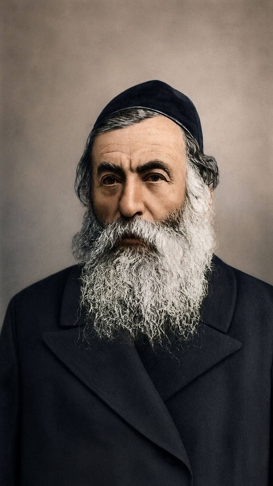

דמותו וחשיבותו
הרב יצחק יעקב ריינס היה מן הדמויות החשובות ביותר בתולדות הציונות הדתית המאורגנת. אם הרבנים שקדמו לו הניחו את היסודות הרעיוניים והציבוריים לשיבת ציון, הרי שריינס העניק לציונות הדתית מסגרת תנועתית ברורה: תנועת המזרחי.
חשיבותו נובעת מן היכולת שלו לשלב בין נאמנות עמוקה לעולם התורה לבין השתתפות פעילה בתנועה הציונית הכללית. הוא ביקש ליצור דרך שבה יהודים דתיים יוכלו לפעול למען התחייה הלאומית בלי לוותר על זהותם הדתית, החינוכית והרוחנית.
אטימולוגיה ופירוש השם
- יצחק: שם עברי מקראי מן השורש צ־ח־ק. השם נקשר לסיפור לידת יצחק אבינו, שבו הצחוק מבטא פליאה, שמחה והתגשמות הבטחה שנראתה בלתי אפשרית.
- יעקב: שם עברי מקראי הקשור למילה "עקב". בספר בראשית נקשר השם בכך שיעקב אחז בעקב עשו בלידתם. במסורת ישראל השם הפך לשם יסוד של האומה, ובהמשך יעקב נקרא גם ישראל.
- ריינס: שם משפחה אשכנזי־אירופי. ייתכן שיש בו זיקה לשמות מקומות או לצורות לשוניות גרמניות/יידיות, אך מקורו המדויק אינו חד־משמעי. לכן נכון להציגו בזהירות כשם משפחה קהילתי־אירופי שהתפתח במרחב האשכנזי.
- הקשר תרבותי: הצירוף "יצחק יעקב" מבטא שורשיות מקראית חזקה, ואילו שם המשפחה ריינס משקף את העולם האשכנזי־מזרח אירופי שבו צמחה הנהגתו הרבנית והציונית.
רקע היסטורי
הרב ריינס פעל בתקופה שבה הציונות המדינית של הרצל החלה להתארגן כתנועה בינלאומית. עבור יהודים דתיים רבים, ההצטרפות לתנועה הציונית עוררה שאלות קשות: האם ניתן להשתתף בתנועה שרבים ממנהיגיה אינם דתיים? האם המפעל הלאומי עלול להחליש את מקומה של התורה? האם אפשר להשפיע מבפנים ולא להישאר מבחוץ?
ריינס השיב לשאלות אלה בדרך מעשית: יש להצטרף למפעל הציוני, אך לעשות זאת מתוך מסגרת דתית מאורגנת שתשמור על התורה, החינוך והזהות היהודית. כך נולד הצורך בתנועת המזרחי.
עיקרי הגותו
- ציונות מתוך תורה: תמיכה במפעל הלאומי לצד נאמנות ברורה להלכה, למסורת ולחינוך תורני.
- מסגרת פוליטית דתית: הצורך בארגון דתי בתוך התנועה הציונית הכללית, ולא רק בתמיכה פרטית או רעיונית.
- חינוך דתי־לאומי: בניית דור חדש שיוכל לשלב תורה, השכלה, אחריות ציבורית ותחייה לאומית.
- שיתוף פעולה עם הציונות הכללית: פעולה משותפת עם התנועה הציונית, תוך שמירה על קול דתי עצמאי.
- מעבר מרעיון לתנועה: הפיכת הציונות הדתית ממגמה רעיונית למסגרת בעלת מוסדות, הנהגה והשפעה.
ייסוד תנועת המזרחי
המעשה ההיסטורי המרכזי המזוהה עם הרב ריינס הוא ייסוד תנועת המזרחי. התנועה נועדה לאפשר לציבור הדתי להשתתף באופן פעיל במפעל הציוני, אך לא כיחידים מפוזרים אלא ככוח מאורגן בעל שפה, מוסדות ועמדה תורנית.
המזרחי הציבה רעיון פשוט אך מכריע: הציונות איננה חייבת להיות מנותקת מן התורה. להפך, התחייה הלאומית זקוקה לתוכן רוחני, לחינוך יהודי ולזהות דתית עמוקה. בכך הפכה התנועה לבית הפוליטי והרעיוני של הציונות הדתית בראשיתה.
אצל ריינס, הציונות הדתית מקבלת בית ארגוני: לא רק רעיון, אלא תנועה.
היחס לציונות המדינית של הרצל
הרב ריינס ראה בציונות המדינית הזדמנות היסטורית חשובה. הוא הבין שהתנועה הציונית הכללית יוצרת כלים מדיניים, דיפלומטיים וארגוניים שלא היו קיימים בדורות קודמים, ולכן אין להתעלם ממנה או לעמוד מן הצד.
עם זאת, הוא לא ביקש להיטמע בתוך הציונות הכללית ללא הבחנה. מטרתו הייתה להצטרף למפעל הציוני תוך שמירה על עמדה דתית עצמאית. במובן זה, דרכו הייתה דרך של שותפות ביקורתית: פעולה משותפת למען העם והארץ, לצד שמירה על זהות תורנית מובחנת.
החידוש הגדול: ציבור דתי ככוח מאורגן
החידוש הגדול של הרב ריינס לא היה רק תמיכה בציונות, אלא יצירת מבנה ציבורי חדש. הוא הבין שהציבור הדתי זקוק למסגרת שתאפשר לו להשפיע על כיוון התנועה הציונית, על החינוך, על התרבות ועל דמותה הרוחנית של התחייה הלאומית.
בכך הוא העביר את הציונות הדתית שלב: מן המבשרים, הרבנים והפעילים המקומיים — אל תנועה בעלת מוסדות, ועידות, הנהגה, מערכת חינוך ושאיפה להשפעה פוליטית וציבורית רחבה.
חינוך דתי־לאומי
החינוך היה אחד הנושאים המרכזיים בדרכו של ריינס. הוא הבין שבלי מערכת חינוך מתאימה, הציונות הדתית לא תוכל להתקיים לאורך זמן. היה צורך לגדל דור שמכיר את עולם התורה, אך גם מבין את אתגרי התקופה, את צורכי התחייה הלאומית ואת האחריות הציבורית.
מכאן נולד הדגש על חינוך דתי־לאומי: חינוך שאיננו מסתפק בלימוד מסורתי בלבד, אך גם איננו מוותר על התורה לטובת לאומיות חילונית. זהו חינוך שמבקש לחבר בין בית המדרש לבין עולם המעשה.
הקשר לציונות הדתית המאוחרת
הרב ריינס הוא חוליה מכרעת בין דור חיבת ציון לבין הציונות הדתית המפלגתית והחינוכית של המאה העשרים. תנועת המזרחי שהקים הפכה למסגרת שממנה צמחו מוסדות, הנהגות, זרמים חינוכיים ומפלגות דתיות־ציוניות.
בכך תרומתו ניכרת לא רק ברעיונות שהציג, אלא במבנה הציבורי שיצר. הוא העניק לציונות הדתית יכולת לפעול, להתווכח, להשפיע ולהתקיים כזרם מובחן בתוך התנועה הציונית והחברה היהודית.
תרומתו ההיסטורית
תרומתו המרכזית של הרב ריינס הייתה המעבר מן הרעיון אל הארגון. הוא לא הסתפק בהצהרה שהציונות יכולה להיות דתית, אלא בנה מסגרת שתאפשר לציבור הדתי לחיות את השילוב הזה בפועל.
בזכותו קיבלה הציונות הדתית שפה פוליטית, חינוכית ותנועתית. הוא הפך אותה מכיוון מחשבתי של יחידים לרשת ציבורית בעלת הנהגה ומוסדות.
מורשת
מורשתו של הרב ריינס היא מורשת של ארגון, אחריות ושותפות. הוא לימד שאפשר להיות חלק מן המפעל הלאומי היהודי בלי לוותר על נאמנות לתורה, ושדווקא משום כך יש צורך במסגרת דתית פעילה ומשפיעה.
באתר זה הוא מוצג כדמות שמעניקה לציונות הדתית את צורתה התנועתית: מן ההגות של מבשרי שיבת ציון, דרך חיבת ציון והמושבות, אל תנועה דתית־ציונית מאורגנת המבקשת להשפיע על עתיד העם והארץ.